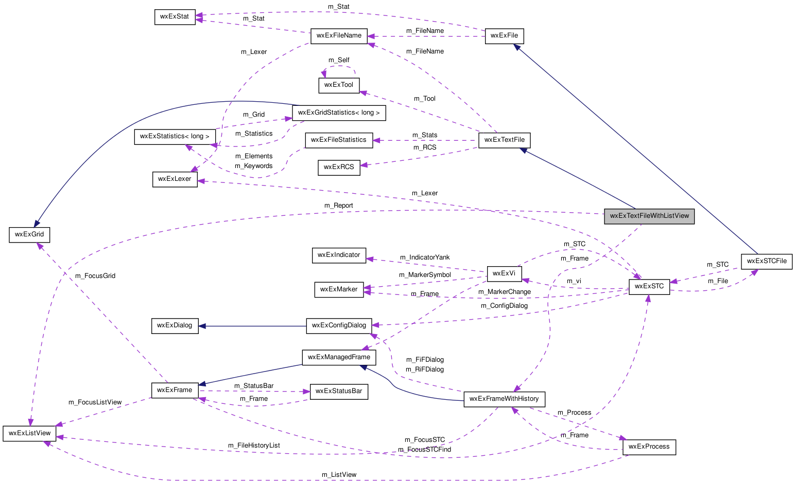

Offers a wxExTextFile with reporting to a listview. More...
#include <wx/extension/report/textfile.h>
Inheritance diagram for wxExTextFileWithListView:

Collaboration diagram for wxExTextFileWithListView:

Public Member Functions | |
| wxExTextFileWithListView (const wxExFileName &filename, const wxExTool &tool) | |
| Constructor. | |
Static Public Member Functions | |
| static bool | SetupTool (const wxExTool &tool, wxExFrameWithHistory *frame) |
| Sets up the tool. | |
Detailed Description
Offers a wxExTextFile with reporting to a listview.